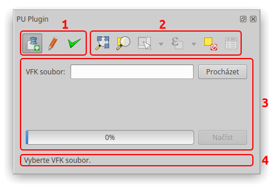

Grafické uživatelské rozhraní¶
Grafické uživatelské rozhraní zásuvného modulu je reprezentováno jedním oknem, které je možné ukotvit do samotného programu QGIS.

Figure 1: Zásuvný modul – grafické uživatelské rozhraní.
- Prvek 1:
Skupina tří ikon pro přepínání mezi záložkami:
- Načtení VFK souboru
- Editace
- Kontroly a analýzy
- Prvek 2:
- Skupina nástrojů, které jsou propojené se standardními nástroji programu QGIS.
- Prvek 3:
- Okna záložek zobrazující se v závislosti na tom, která ze tří ikon záložek (prvek 1) je aktivní.
- Prvek 4:
- Stavový řádek, ve kterém se ukazují zprávy.